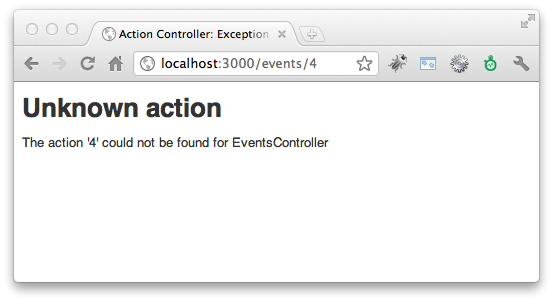
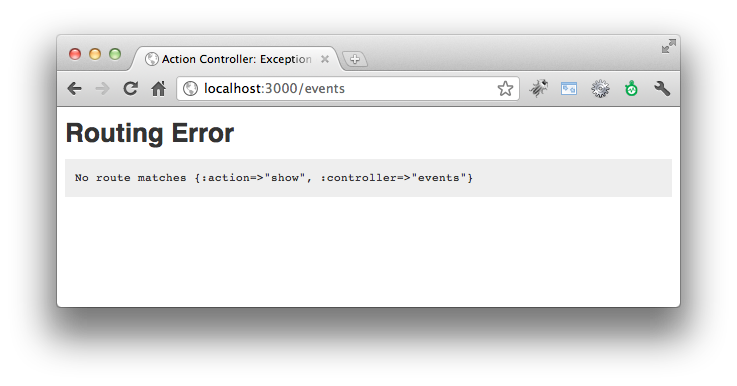

请注意本章内容衔接前一章，请先完成前一章内容。
The first 90% of the code accounts for the first 90% of the development time. The remaining 10% of the code accounts for the other 90% of the development time. – Tom Cargill, 贝尔实验室的对象导向程式专家
RESTful路由设计是Rails的一项独到的发明，它使用了REST的概念来建立一整组的命名路由(named routes)。
什么是REST呢？表象化状态转变Representational State Transfer，简称REST，是Roy Fielding博士在2000年他的博士论文中提出来的一种软件架构风格。相较于SOAP、XML-RPC更为简洁容易使用，也是众多网络服务中最为普遍的API格式，像是Amazon、Yahoo!、Google等提供的API服务均有REST介面。
REST有主要有两个核心精神：1. 使用Resource来当做识别的资源，也就是使用一个URL网址来代表一个Resource 2. 同一个Resource则可以有不同的Representations格式变化。这一章的路由实作了Resource概念，而Representation则是用了respond_to方法来实作，稍候我们也会介绍如何使用。
关于REST的理论可以参考笔者整理的什么是REST跟RESTful？。不过，了解理论并不是在Rails中使用RESTful路由的前提条件，所以大可以跳过不甚理解没关係。我们只要知道它可以带来什么技术上的具体好处，以及如何使用就足够了。
RESTful带给Rails最大的好处是：它帮助我们用一种比较标准化的方式来命名跟组织Controllers和Actions。在没有RESTful之前，我们上一章介绍了典型路由设计方式，也就是一个个指定Controller和Action，虽然十分地简便，但是却没有什么準则。同一个Action让不同的开发者设计，就很可能放在不同的Controller之下，更常见的是让一个Controller放太多不相关的Action，造成单一Controller过于庞大。
将RESTful带入Rails路由系统的点子，出自它对应了HTTP动词POST、GET、PATCH/PUT、DELETE到资料的新增、读取、更新、删除等四项操作。一旦将HTTP动词考虑进来，如此我们就将上一章手工打造CRUD的路由
/events/create/events/show/1/events/update/1/events/destroy/1变成
POST /events对应到Controller中的create action
GET /events/1对应到Controller中的show action
PATCH /events/1对应到Controller中的update action
DELETE /events/1对应到Controller中的destroy action
什么是HTTP method？在HTTP通讯协定中制定了九种动词(Verbs)来跟服务器沟通，分别是HEAD、GET、POST、PUT、PATCH、DELETE、TRACE、OPTIONS、CONNECT。其中最常见的就是GET和POST：GET用来读取资料，这个动作不应该造成任何资料变更。而POST用于送出资料，这个动作不会被快取。而因为HTML只能送出GET或通过表单送出POST，Rails为了突破这个限制，在POST加上一个隐藏参数
_method=PATCH或_method=DELETE就可以当做PATCH和DELETE请求了。
HTTP GET和其他动词最大的差别在于它被认为是一个纯读取、不会修改任何资料的操作，不像POST、PATCH、DELETE会修改服务器上的资料。我们一般用浏览器GET网页，可以回上一页或重新整理，但是POST网页要重新整理时，浏览器会提示你是否要在执行一次，就是这个道理。
Rails用这套惯例来大大简化了路由设定。那程式该怎麼写呢？我们在config/routes.rb加入以下一行程式：
resources :events
如此就会自动建立四个命名路由(named routes)，搭配四个HTTP动词，对应到七个Actions。它的实际作用，就如同以下的routes.rb设定：
get '/events' => "events#index", :as => "events"
post '/events' => "events#create", :as => "events"
get '/events/:id' => "events#show", :as => "event"
patch '/events/:id' => "events#update", :as => "event"
put '/events/:id' => "events#update", :as => "event"
delete '/events/:id' => "events#destroy", :as => "event"
get '/events/new' => "events#new", :as => "new_event"
get '/events/:id/edit' => "events#edit", :as => "edit_event"
用这张表格会更清楚：
| Helper | GET | POST | PATCH/PUT | DELETE | |
|---|---|---|---|---|---|
| event_path(@event) | /events/1 show action |
/events/1 update action |
/events/1 destroy action |
||
| events_path | /events index action |
/events create action |
|||
| edit_event_path(@event) | /events/1/edit edit action |
||||
| new_event_path | /events/new new action |
输入bin/rake routes也会列出目前设定的路由规则有哪些：
$ bin/rake routes
Prefix Verb URI Pattern Controller#Action
events GET /events(.:format) events#index
POST /events(.:format) events#create
new_event GET /events/new(.:format) events#new
edit_event GET /events/:id/edit(.:format) events#edit
event GET /events/:id(.:format) events#show
PATCH /events/:id(.:format) events#update
PUT /events/:id(.:format) events#update
DELETE /events/:id(.:format) events#destroy
welcome GET /welcome(.:format) welcome#index
welcome_say_hello GET /welcome/say_hello(.:format) welcome#say
root GET / welcome#index
其中的Prefix指的是在View的Helper命名，搭配_path(相对路径)或_url(绝对路径)结尾就可以组合出Helper方法，例如welcome_say_hello_path方法会产生出/welcome/say_hello这样的网址。
另外，注意到这七个Action方法的名字，Rails是定好的，无法修改。这一套惯例建议你背起来，你可以这样记忆：
event_path(@event)需要参数，根据HTTP动词决定show、update、destroy
events_path毋需参数，根据HTTP动词决定index、create
因此，最后我们不写：
link_to event.name, :controller => 'events', :action => :show , :id => event.id
而改写成：
link_to event.name, event_path(event)
只需记得resources名称，就可以推导出一整组的URL Helper方法。Rails就是利用这样的高阶概念，来简化路由的设计。
浏览器支持PATCH/PUT跟DELETE吗？Rails其实偷藏了
_method参数。HTML规格只定义了GET/POST，所以HTML表单是没有PUT/DELETE的。但是XmlHttpRequest规格(也就是Ajax用的)有定义GET/POST/PUT/PATCH/DELETE/HEAD/OPTIONS。
根据上一节所学到RESTful技巧，接续上一章的CRUD应用程序，来改造成RESTful应用程序，相信各位读者可以从中发现到RESTful所带来的简洁好处。让我们开始动手修改吧：
编辑config/routes.rb，加入一个Resources：
resources :events
请加在上方，routes.rb裡面越上面的规则优先权较高。
编辑app/views/events/index.html.erb，修改各个link_to的路径：
<% @events.each do |event| %>
<li>
<%= event.name %>
<%= link_to "Show", event_path(event) %>
<%= link_to 'Edit', edit_event_path(event) %>
<%= button_to 'Delete', event_path(event), :method => :delete %>
</li>
<% end %>
</ul>
<%= link_to 'New Event', new_event_path %>
注意到删除的地方，我们多一个参数:method => :delete。非GET的操作，顾及网页亲和力我们顺道把link_to改成用button_to。link_to如果浏览器的JavaScript没开，就会无法送出GET之外的操作。button_to就无此困扰，因为Rails是产生form标籤夹带_method参数。
编辑app/views/events/show.html.erb，修改link_to的路径：
<%= @event.name %>
<%= simple_format(@event.description) %>
<p><%= link_to 'Back to index', events_path %></p>
修改app/views/events/new.html.erb的表单送出位置如下：
<%= form_for @event, :url => events_path do |f| %>
在本例中，你也可以完全省略
:url参数，Rails可以根据@event推算出路由。
修改app/views/events/edit.html.erb的表单送出位置如下：
<%= form_for @event, :url => event_path(@event), :method => :patch do |f| %>
:url和:method也可以省略，Rails自动会根据@event是新建的还是修改来决定要不要使用PATCH。
修改app/controllers/events_controller.rb，将create Action和destroy Action裡的redirect_to改成
redirect_to events_url
而update Action中的redirect_to改成
redirect_to event_url(@event)
一旦完成RESTful之后，我们在上一章一开始设定的典型路由就用不到了，编辑config/routes.rb将以下程式註砍掉：
match ':controller(/:action(/:id(.:format)))', :via => :all
典型路由虽然设定上很方便，但已经不被推荐使用，它让所有Actions都可以通过GET访问到，而有安全上的顾虑。我们希望限制接收表单的create Action只允许POST请求。
明明有在config/routes.rb裡面定义了resources路由，但是出现以下的Unknown action错误：

排除打错字之外，其原因多半是跟routes.rb裡面的定义顺序有关。注意到在routes.rb裡面，越上面的路由规则越优先，例如如果你定义成：
Rails::Application.routes.draw do
match ':controller(/:action(/:id(.:format)))', :via => :all
resources :events
end
那么网址/events/4就会优先比对到:controller/:action而去找4这个Action，这就错了。
这错误通常发生在link_to裡，它抱怨找不到适合的路由规则来产生网址：

如果你是用典型路由，那么如以下程式乱给一个不存在的Controller，就会产生一样的错误了：
link_to "foobar", :controller => "No such controller", :action => "blah"
因为{ :controller => "No such controller", :action => "blah" }比对不出有这个路由规则。但是如果是用RESTful路由呢？那多半是因为参数传错了，例如：
link_to "Show", event_path(@foobar)
这个@foobar没有定义所以是nil，event_path(@foobar)对Rails内部来说等同于{ :controller => "events", :action => "show", :id => nil }，这就造成了找不到路由的错误，它必须知道:id才能知道是那一个活动的show Action网址。
respond_to可以让我们在同一个Action中，支持不同的资料格式，例如XML、JSON、Atom等。让我们来实作看看。
Atom是一种基于XML的供稿格式，被设计为RSS的替代品，广泛应用于Blog feed。
修改app/controllers/events_controller.rb的index Action加上XML、JSON和Atom的支持，其中to_xml和to_json是ActiveRecord内建的方法：
def index
@events = Event.page(params[:page]).per(5)
respond_to do |format|
format.html # index.html.erb
format.xml { render :xml => @events.to_xml }
format.json { render :json => @events.to_json }
format.atom { @feed_title = "My event list" } # index.atom.builder
end
end
新增app/views/events/index.atom.builder档案，内容如下：
atom_feed do |feed|
feed.title( @feed_title )
feed.updated( @events.last.created_at )
@events.each do |event|
feed.entry(event) do |entry|
entry.title( event.name )
entry.content( event.description, :type => 'html' )
end
end
end
打开浏览器分别浏览看看http://localhost:3000/events.xml、http://localhost:3000/events.json、http://localhost:3000/events.atom这几个附档名不同的网址。
修改app/controllers/events_controller.rb的show Action加上XML和JSON的支持，这回我们试试看比较手工的方式，用Builder格式来建构XML，以及手动组Hash再转成JSON字串：
def show
@event = Event.find(params[:id])
respond_to do |format|
format.html { @page_title = @event.name } # show.html.erb
format.xml # show.xml.builder
format.json { render :json => { id: @event.id, name: @event.name }.to_json }
end
end
编辑app/views/events/show.xml.builder：
xml.event do |e|
e.name @event.name
e.description @event.description
end
打开浏览器分别浏览看看http://localhost:3000/events/1.xml、http://localhost:3000/events/1.json等网址。
如果想要加上这些格式的超链接，可以在URL Helper中传入:format参数。让我们修改app/views/events/index.html.erb加上不同格式的超链接：
<% @events.each do |event| %>
<li>
<%= link_to event.name, event_path(event) %>
<%= link_to " (XML)", event_path(event, :format => :xml) %>
<%= link_to " (JSON)", event_path(event, :format => :json) %>
<%= link_to 'edit', edit_event_path(event) %>
<%= button_to 'delete', event_path(event), :method => :delete %>
</li>
<% end %>
</ul>
<%= link_to 'new event', new_event_path %>
<%= link_to "Atom feed", events_path(:format => :atom) %>
到目前为止，总共写了多少程式了呢？Rails提供了一个简单的指令可以知道：
$ bin/rake stats
就会输出这样的表格：
+----------------------+-------+-------+---------+---------+-----+-------+
| Name | Lines | LOC | Classes | Methods | M/C | LOC/M |
+----------------------+-------+-------+---------+---------+-----+-------+
| Controllers | 86 | 61 | 2 | 7 | 3 | 6 |
| Helpers | 4 | 4 | 0 | 0 | 0 | 0 |
| Models | 2 | 2 | 1 | 0 | 0 | 0 |
| Libraries | 0 | 0 | 0 | 0 | 0 | 0 |
| Integration tests | 0 | 0 | 0 | 0 | 0 | 0 |
| Functional tests | 49 | 39 | 1 | 0 | 0 | 0 |
| Unit tests | 11 | 6 | 2 | 0 | 0 | 0 |
+----------------------+-------+-------+---------+---------+-----+-------+
| Total | 152 | 112 | 6 | 7 | 1 | 14 |
+----------------------+-------+-------+---------+---------+-----+-------+
Code LOC: 67 Test LOC: 45 Code to Test Ratio: 1:0.7
其中LOC是指不包含空行的行数。
如果是Model中的程式，你可以在命令行下输入rails console，然后在Console中呼叫看看Model的方法看看正确与否。而除错Controller和Views一个简单的方法是你可以使用debug这个Helper方法，例如在app/views/events/show.html.erb中插入：
<%= debug(@event) %>
这样就会输出@event这个值的详细内容。不过，更为常见的是使用Logger来记录信息到log/development.log裡。
在Rails环境中，你可以直接使用logger或是Rails.logger来拿到这个Logger对象，它有几个方法可以呼叫：
例如，你想要观察程式中变数@event的值，你可以插入以下程式到要观察的程式段落之中：
Rails.logger.debug("event: #{@event.inspect}")
接着开浏览器跑实际跑过这段程式，那么就会在rails server的标准输出中，看到这个除错信息。或是你也可以另开一个指令窗口执行tail -f log/development.log来观察log档案。
在Production环境中，log/production.log会逐渐长大，可以使用 logrotate 定期整理 Rails Log 档案。
我们会在测试一章进一步介绍如何撰写测试程式，撰写单元测试可以大大降低除错时间。